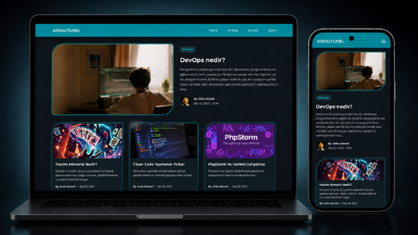
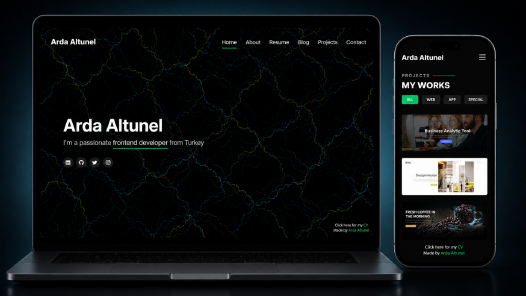
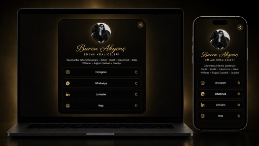
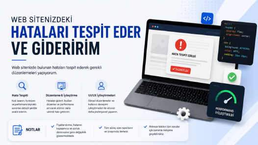
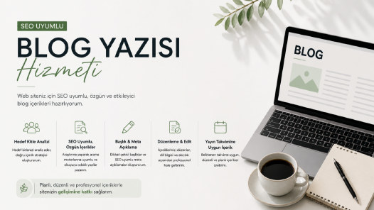
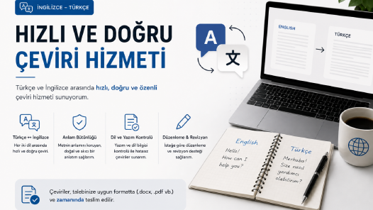

Frontend Geliştirme
React ve modern CSS araçlarıyla responsive, tutarlı ve yeniden kullanılabilir arayüzler.
Full Stack Developer · İstanbul
React, JavaScript, PHP, MySQL ve Supabase ile responsive arayüzler ve uçtan uca web uygulamaları geliştiriyorum; REST API entegrasyonundan yayına kadar süreci yönetiyorum.
Profil
Ben Arda Altunel. Web teknolojileri ve kullanıcı arayüzü geliştirmeye odaklanan bir Full Stack Developer ve Frontend Developer'ım. WEATRA'da frontend stajyerliğinden full-time geliştirici rolüne uzanan deneyimimde responsive, kullanıcı odaklı arayüzler ve gerçek proje çıktıları ürettim.
React, PHP, MySQL ve Supabase ile geliştirme; REST API entegrasyonu, Git/GitHub, Vite/Vercel yayın süreçleri ve temel UI/UX prensiplerinde uygulamalı deneyime sahibim. İstanbul Okan Üniversitesi Mobil Teknolojileri programında eğitimime devam ediyorum.
React ve modern CSS araçlarıyla responsive, tutarlı ve yeniden kullanılabilir arayüzler.
REST API, Supabase, MySQL ve JSON ile çalışan veri ve içerik akışları.
Frontend, backend, Git tabanlı çalışma ve Vercel/GitHub Pages yayın süreçleri.
Açık kaynak
GitHub
A modern, responsive personal portfolio website with dynamic content support, prepared for deployment on Vercel.
A multi-purpose utility platform offering productivity applications and interactive dashboard experiences.
A modern blog platform with article publishing, content management, and user system features.
A modern music sharing platform with features for uploading songs, listening to music, editing, and deleting.
A minimalist informational website explaining why it's more efficient to get straight to the point in conversations instead of writing only “hello.”
A modern promotional website developed for the Phantaso bot, offering entertainment, moderation, and utility systems for Discord servers.
Bionluk

Merhaba, Size özel bir blog web sitesi hazırlıyorum. İstediğiniz kategoriye uygun (kişisel, teknoloji…
Bionluk'ta İncele
Merhaba, Size özel bir portföy (portfolio) web sitesi hazırlıyorum. Kişisel markanızı, çalışmalarınızı ve…
Bionluk'ta İncele
Merhaba, Size özel tüm sosyal medyalarınızı tek bir adreste toplayabileceğiniz web sitesi oluşturuyorum…
Bionluk'ta İncele
Merhaba, Web sitenizde bulunan hataları tespit ederek gerekli düzenlemeleri yapıyorum. Mevcut sorunları…
Bionluk'ta İncele
Merhaba, Web siteniz için SEO uyumlu, özgün ve etkileyici blog içerikleri hazırlıyorum. Hedef kitlenizi…
Bionluk'ta İncele
Merhaba, Türkçe ve İngilizce arasında hızlı, doğru ve özenli çeviri hizmeti sunuyorum. Blog yazıları, kısa…
Bionluk'ta İnceleYetenekler
Yapay zekâ destekli üretim, model kavramları ve modern geliştirme akışlarında kullandığım yetkinlikler.
Responsive arayüzler, web uygulamaları ve bileşen tabanlı geliştirme yetkinliklerim.
Sunucu tarafı geliştirme, veri yönetimi ve servis entegrasyonları.
Programlama, geliştirme, sürüm kontrolü, yayın ve bakım süreçlerinde kullandığım teknolojiler.
Bu teknolojileri daha çok şu tip web ihtiyaçlarında kullanıyorum.
Şirket, kişi veya hizmet tanıtımı için temiz ve hızlı web siteleri.
Liste, form ve yönetim ekranlarında düzenli ve okunabilir arayüzler.
Form, kayıt, listeleme ve içerik yönetimi gibi PHP tabanlı ihtiyaçlar.
Telefon, tablet ve masaüstünde düzgün çalışan sayfa düzenleri.
Deneyim
Frontend stajı sonrasında tam zamanlı role geçerek responsive web arayüzleri, proje geliştirme süreçleri ve temel UI/UX uygulamalarında aktif sorumluluk aldım.
HTML, CSS ve JavaScript ile tasarımları çalışan, farklı ekran boyutlarına uyumlu arayüzlere dönüştürdüm; ekip içi proje süreçlerine katkı sağladım.
Mobil Teknolojileri ön lisans bölümünde; mobil uygulama geliştirme, UI tasarımı, algoritma/programlama, veritabanı ve Android/iOS yaşam döngüsü üzerine eğitim alıyorum.
Tuzla Mesleki ve Teknik Anadolu Lisesi'nde programlama mantığı, algoritma, veritabanı ve yazılım geliştirme alanlarında uygulamalı eğitim aldım.
Sertifikalar ve eğitimler
IBM
Sertifikayı açLinkedIn Learning
Sertifikayı açGoogle Cloud Skills Boost
Sertifikayı açSmartPro Teknoloji
Sertifikayı açUdemy
Sertifikayı açBTK Akademi
Sertifikayı açBTK Akademi
Sertifikayı açBTK Akademi
Sertifikayı açUdemy
Sertifikayı açUdemy
Sertifikayı açYazılar
Geliştirme, yayın ve operasyon süreçlerinin nasıl birlikte çalıştığını sade bir dille anlatıyorum.
Oku Backend PHP Nedir?Sunucu tarafında çalışan PHP'nin web projelerindeki rolünü ve kullanım alanlarını özetliyorum.
Oku CMS CMS Nedir?İçerik yönetim sistemlerinin site yönetimini nasıl kolaylaştırdığını pratik örneklerle ele alıyorum.
Okuİletişim
Yeni bir site, mevcut arayüzü yenileme veya küçük bir web uygulaması için bana ulaşabilirsin. Kısa bir brief ya da referans link göndermen yeterli.